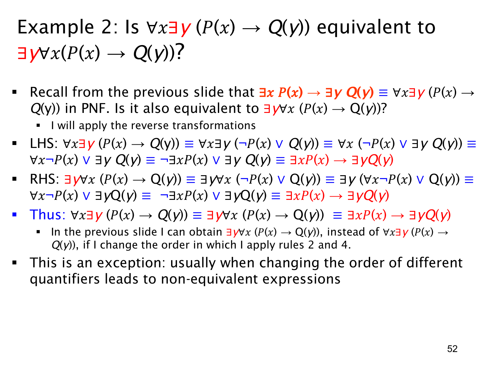

L1.2 · 第 52 页讲解原文
查看这一页课件

一个例外：这里交换 ∀x 与 ∃y 仍等价
前面的例子说明混合量词通常不可换序；本页指出这个特定谓词结构是例外：在课件默认的非空共同论域中，
∀x∃y(P(x)→Q(y))≡∃y∀x(P(x)→Q(y)).
两式都可化回上一页的原句 (∃xP(x))→(∃yQ(y))。左式先写成 ∀x∃y(¬P(x)∨Q(y))。因 y 不在 P(x) 中，先把 ∃y 移出“或”；再因 x 不在 ∃yQ(y) 中，把 ∀x 移出，得到
(∀x¬P(x))∨(∃yQ(y))≡(¬∃xP(x))∨(∃yQ(y)).
右式 ∃y∀x(¬P(x)∨Q(y)) 也可先移出 ∀x，再移出 ∃y，得到同一式子。于是两者都等价于“如果存在满足 P 的对象，那么存在满足 Q 的对象”。
也可从情况直接理解：若至少有一个 Q(y) 真，就能选这个固定 y，让 P(x)→Q(y) 对所有 x 成立；若没有任何 Q(y) 真，整式要成立就只能让所有 P(x) 假，此时在非空论域中任取一个 y 都使每个条件句因前件假而成立。这样“可随 x 选 y”最终总能转成“有一个共同 y”。
课件强调这是特殊结构导致的等价，不是允许一般性地交换不同类型的量词。若把谓词换成任意二元关系 R(x,y)，∀x∃yR(x,y) 与 ∃y∀xR(x,y) 通常仍不等价。